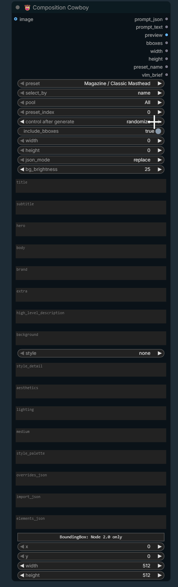

🤠 Composition Cowboy
Pick a best-practice design layout — magazine cover, comic page, book cover, poster — fill in the content (by hand or from a VLM), and out comes an Ideogram-4 caption JSON, a plain-language layout prompt, and a live preview.
01What it is
A layout-aware prompt builder. Instead of describing placement in prose, you choose a preset whose region geometry already follows graphic-design conventions (masthead placement, rule-of-thirds focal points, comic gutters, billing blocks, barcode safe-zones…), then supply the content. It outputs the same caption schema as Kijai's Ideogram 4 Prompt Builder — so it chains right into that node's visual editor — plus a natural-language version for any other model. It loads no AI model itself; it pipes to your VLM node over sockets.
02Anatomy of the node
Here's the node, zone by zone. The numbered pins match the notes on the right.

1Ports — 1 image in, 8 out
Left: an optional image reference for the preview. Right, the eight outputs: prompt_json (Ideogram caption), prompt_text (plain language), preview (the rendered layout), bboxes, width/height, preset_name, and vlm_brief. See §04.
2Choose the layout
Pick by name from preset, or set select_by = index and let preset_index (with its control after generate dropdown on increment) sweep through the pool on auto-queue. In your screenshot it's on randomize — that jumps to a random preset each run. See §05.
3Output shape
include_bboxes on = region coordinates in the JSON; off = a clean coordinate-free prompt. width/height at 0 use the preset's aspect. json_mode controls how a wired import_json merges. bg_brightness dims the preview's reference image.
4Content — role slots
The fast way to fill content. Type into title, hero, etc.; each fills every region of that role. Text regions take the literal words; object regions take a subject description. Blank = keep the preset's built-in. See §06.
5KJ-parity style fields
The same global fields KJ's node exposes, available on every preset. Set style to photo or art_style to emit a full Ideogram style_description block. high_level_description / background override the preset's defaults when filled.
6Pipe-in JSON
Three wire-able text inputs: overrides_json (per-region content — the main VLM target), import_json (a whole caption from KJ or a VLM), and elements_json (your own regions). Right-click → Convert to input to wire any of them.
7The bboxes socket
This is the BOUNDING_BOX input. The "Node 2.0 only" banner + x/y/w/h fields are just the frontend's default editor for that type — the real use is to wire a detection / grounding node's BOUNDING_BOX output into the socket to place regions from an image. See §08.
docs/assets/composition_cowboy_node.png and it appears at the top of this section automatically (the annotated replica above always renders regardless).03What the layouts actually look like
Each preset is a set of regions positioned by design convention. These are the real coordinates the node ships — ◾ amber = object/image regions, ◾ blue = text regions.
masthead
cover subject
cover line
cover lines
full-bleed key art
billing block
hero, art, panels)
text region (title, masthead, captions)
gutters & safe margins are baked into the spacing
04Inputs & outputs at a glance
- Selection —
preset,select_by,pool,preset_index - Output shape —
include_bboxes,width,height,json_mode,bg_brightness - Role slots —
title·subtitle·hero·body·brand·extra - Style —
high_level_description,background,style+style_detail/aesthetics/lighting/medium/style_palette - Pipe-in —
overrides_json,import_json,elements_json,image,bboxes
prompt_json— Ideogram-4 caption → KJ'simport_jsonor an Ideogram API nodeprompt_text— plain-language layout for any modelpreview— rendered region diagram (numbered tags + preset banner)bboxes— pixel boxes for SAM / crop (empty if the toggle is off)width/height— resolved canvas sizepreset_name— active preset (great on a Show-Text node)vlm_brief— instruction to drive your VLM
05Presets & auto-queue iteration
Manual pick
Leave select_by = name and choose from the preset dropdown.
Iterate styles
select_by = indexpool→ scope (e.g.Comic, orAll)preset_indexcontrol → increment- turn on Auto Queue
preset_index because ComfyUI only auto-advances numeric widgets. increment walks the pool in order; randomize (as in your screenshot) jumps to a random preset each run; fixed stays put. It advances on auto-queue, not on a single manual run.06Overriding content
| Region type | Your text becomes… | Example |
|---|---|---|
text | the literal words shown | title → "The Future of AI" |
obj | the subject description | hero → "a woman in a red gown" |
Use the role slots for the common case; use overrides_json for precision — keyed by role (all matching regions) or by 1-based region number (one region, shown in the preview tags):
{ "brand":"TRENTLY", "title":"Cover Story", "3":"a lone astronaut on a red dune" }
Precedence (last wins): preset built-in → import_json → elements_json → role slot → overrides_json [role] → overrides_json [index] → bboxes socket → global high_level_description/background.
Style block (KJ parity)
With style = photo the node emits, in KJ's exact key order:
"style_description": { "aesthetics":"moody", "lighting":"rim light", "photo":"35mm, shallow DOF", "medium":"photograph", "color_palette":["#1A1A1A","#E0C080"] }
07VLM piping
The node loads no model — it pipes to your VLM (MiniCPM, Florence-2, Qwen-VL, JoyCaption…). The round-trip:
overrides_json.You can equally feed a full caption into import_json, or bounding boxes from a grounding/SAM node into the bboxes socket.
08User Defined regions & the bboxes socket
Pick Custom / User Defined to start from an empty page, then author regions in elements_json (a JSON list, or a single object):
[ {"type":"text","x":0.10,"y":0.05,"w":0.80,"h":0.12,"text":"HELLO","role":"title"}, {"type":"obj","bbox":[300,100,700,900],"desc":"a dragon"} ]
Each region takes x/y/w/h (0–1 fractions) or a KJ-style bbox [ymin,xmin,ymax,xmax] on the 0–1000 grid, plus optional type/text/desc/palette/role.
bboxes BOUNDING_BOX input. The inline x/y/w/h fields are the frontend's fallback editor for that socket type. Its real purpose is to accept a BOUNDING_BOX wired from a detection/grounding node — those boxes seed regions when the preset is empty, or reposition existing regions by index. Coordinates that are non-finite or unusable degrade gracefully (the region becomes "unplaced") instead of crashing.09Preset catalog
| Pool | Presets |
|---|---|
| Magazine | Classic Masthead · Fashion Full-Bleed · Minimalist · Newsstand (Cover-Line Heavy) |
| Comic | 4-Panel 2×2 · 6-Panel 2×3 · Splash Page · 3-Tier Widescreen · Manga (R-to-L) |
| Book | Title Dominant · Author Dominant · Series Branded · Full Wrap (Back+Spine+Front) |
| Poster | Movie One-Sheet · Teaser (Centered Title) · Cast-Heavy (Billing Block) · Gig / Event |
| Custom | User Defined (empty — author via elements_json / sockets) |
Add your own by dropping a JSON file into presets/layout/ (restart ComfyUI to refresh the dropdown).
10Tips & gotchas
- New preset files need a restart to appear in the dropdown; index iteration picks them up immediately.
- control after generate advances on auto-queue, not a single manual run.
- width/height 0 = use the preset's aspect.
- Role slots hit every matching region — use numbered
overrides_jsonkeys for per-region control (e.g. each comic panel). - Bad input is safe — malformed JSON / coordinates degrade gracefully; empty imported fields don't clobber preset values.
- Chain to KJ — wire
prompt_json→ Ideogram 4 Prompt Builderimport_json(setimport_mode = always) to hand-tweak on its canvas.